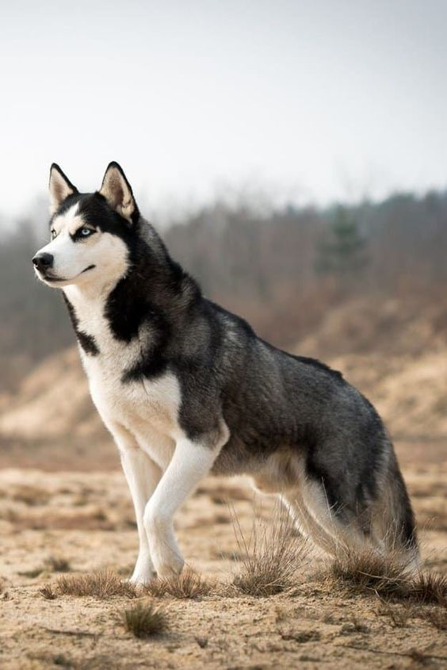
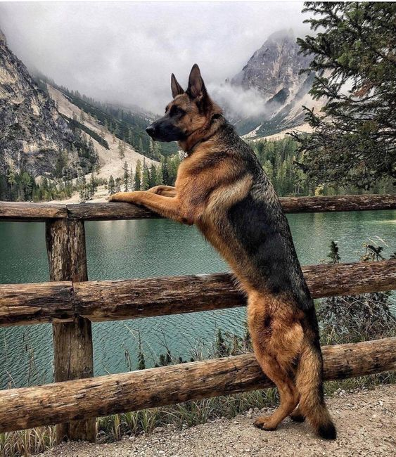
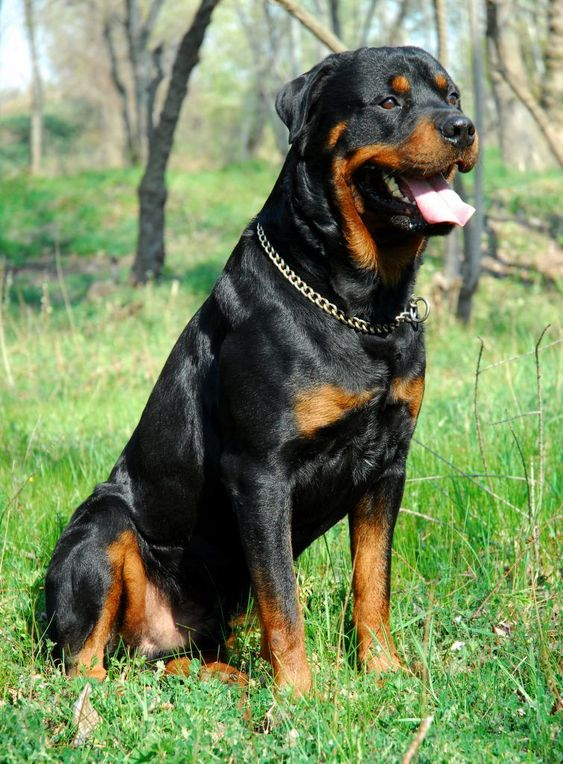
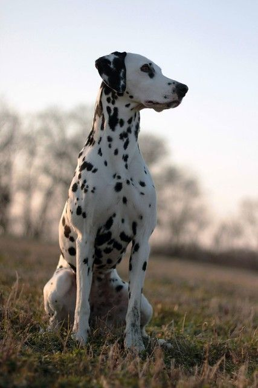
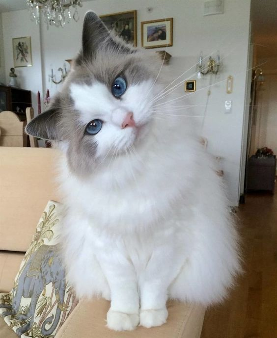
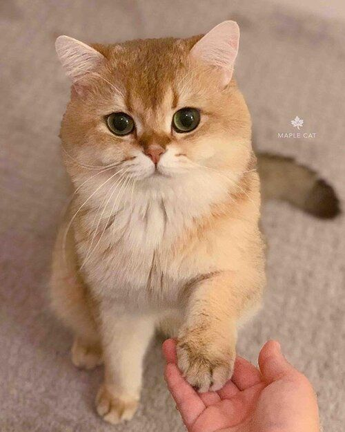
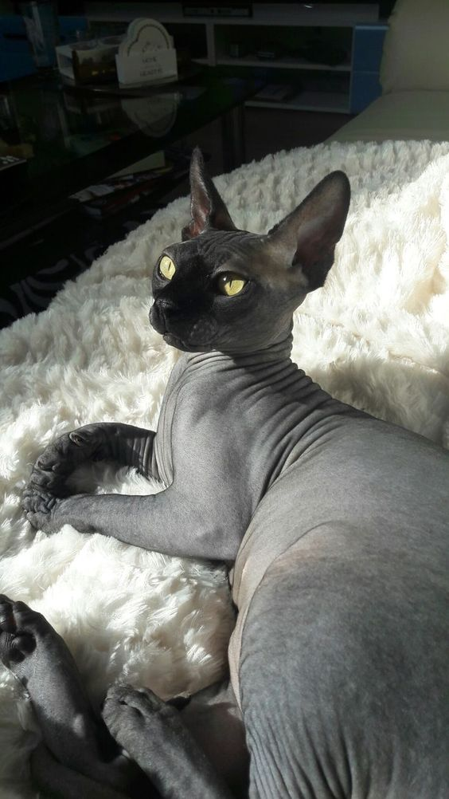

| Image |
Breed |
Description |
 |
Golden Retriever |
Golden Retrievers have a beautiful golden coat of fur. They are described as a family-friendly dog, playful, cheerful and intelligent. |
|  |
Siberian Husky |
This dog breed has a very thick coated fur that is made to keep them warm in the snow. They are usually made as sled dogs to help men travel long distances in the cold winter. Siberian Huskies are friendly, strong, and excellent working dogs. |
|  |
German Shepherd |
The German Shepherd have a good nose to detect dangerous things. People would usually see these dogs in Police Forces. Other than that they can be really good protectors because they have a strong bite force. |
|  |
Rottweiler |
Rottweilers looks like a fierce looking dog and they are, other than the German Shepherds, Rottweilers are also good protectors and their bite force are strong too. They have really good guard insticts. |
|  |
Dalmatian |
Dalmatians have such beautiful white fur with black spots. They are graceful dogs with a muscular body. They're furs are so beautiful don't you think they'll make great coats? (Cruella joke). |
 |
Scottish Fold |
These cats are very unique because of their folded ears, that's why their breed is called "Scottish Fold". They are very sweet and loving cats and they can be very affectionate towards it's owner. |
 |
Persian |
Some Persians have a slight grumpy face and some have a flat grumpy face. These cat have very long, fluffy fur. These cats are very affectionate, elegant almost royal like and they are very calm. |
|  |
Ragdoll |
Ragdolls have long, silky and soft fur. They look like cats perfect for royalty, these cats also have very beautiful piercing blue eyes. They are calm and sociable cats. |
|  |
British Shorthair |
British Shorthairs are unique breeds because their paws are black, most cats have pink paws. Their fur cots are thick that makes them look chonky. These cats are loyal and loveable, they'll cling to you all the time. |
|  |
Sphynx |
Sphynx cats are worshipped in Egypt, people would treat them as royalty. These cats are odd but unique because this is the only cat that does not have any fur on it's body. |
| Dogs |
Cats |
Contact No. |
| ₱10k |
Persian: ₱4k -Other cats ₱8k |
097559272893 |